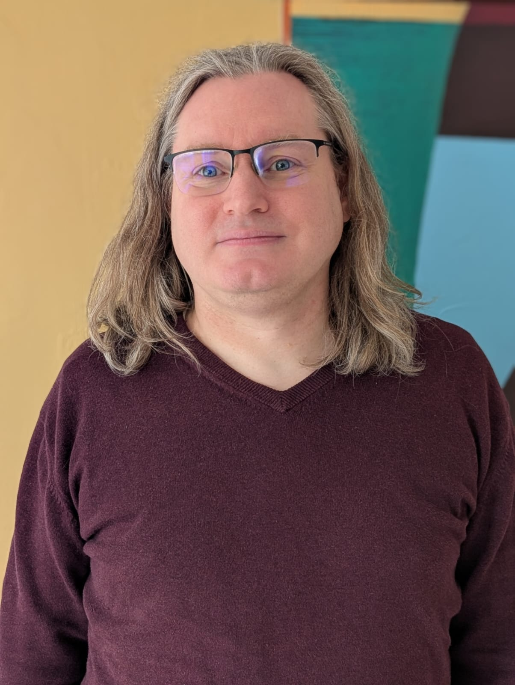

Ludger Goeke
Computer Scientist · Systems Thinker · Transformation and Change Facilitator · Chief AI Skeptic Officer · Spiritual Traveler

Computer Scientist · Systems Thinker · Transformation and Change Facilitator · Chief AI Skeptic Officer · Spiritual Traveler
Original professional background
My original professional background is in computer science. At the start of my professional career, I supported the documentation department of a company in the context of a structural organizational change process. In this role, I developed corresponding tool support, primarily in the form of Visual Basic macros, and conceived and conducted quality assurance measures for changes to the documentation.
Subsequently, I worked primarily in the field of cybersecurity, both in commercial projects and in various research projects. In the commercial sector, I primarily participated in software evaluation processes, including security related and functional testing. In one of the research projects, I contributed to the design and development of a validation process, including tool support, related to the information security of cloud systems. In another project, I coordinate the software development of various serious online games designed to train people to recognize social engineering attacks. In this context, I also worked with project partners and clients to create specific learning content for the serious games. Additionally, I designed and conducted client-specific security awareness training sessions.
Transition phase
Over time, partly as a result of my research activities, my focus has shifted from a technical perspective to a sociotechnical view on information technology, with a particular interest in the social subsystems. In addition, I have developed a general interest in change and transformation, including organizational change as well as positive social change.
After first encountering systemic methodologies at the individual level during a coaching training program, it became clear to me that I also wanted to apply such methods at the level of complex systems. Following this experience, I embarked on a learning journey to acquire the necessary systemic knowledge and skills to contribute to positive systems change. Accordingly, I have completed several further educations in topics such as Theory U (awareness-based change method), Systemic Organizational Development, Systemic Design for Tackling Complexity, Co-design for Societal Impact, and Radical Transformational Leadership ("Radical" means in this context "from the root of our being").
As a starting point for my systems change activities, I've joined several hubs within the Theory U community where change makers come together to discuss their change initiatives, support one another, and practicing concepts (e.g. Deep Listening, Generative Dialogue) and methods (e.g. Case Clinic — a peer coaching process) of the Theory U. In this context, I am also involved in some of the co-planning and hosting of hub online meetings.
Throughout my learning journey, which has repeatedly touched on topics such as "Responsible AI" and "Technology for Good," I have come to realize that I want to apply my transformation and systems change skills in the context of the responsible and ethical development and use of information technology. On one hand, I could gain a profound consciousness of the impacts of technologies such as social media and AI to the social sphere and the resulting necessity to ensure a usage of this technology in an aware, ethical and responsible way. At the same time, I developed a deep sense of responsibility to participate in the "stewardship of the information technology landscape" because my technical background in computer science, combined with my systemic knowledge and skills, allows me to serve as a mediator between the technical and social sphere.
As a first step toward bringing this intention to life, I joined the core team of a co-creation process applying Theory U on the topic of "Building awareness regarding a responsible use of AI for the common good" which has been initiated by several members from the Accompany change hub (the original German hub title is "Wandel begleiten"). And then another member from this hub introduced me to the AI Roundtable organized by the AI Craftspeople Guild…
Joining the AI Craftspeople Guild and my role as Chief AI Skeptic Officer
After attending my first AI Roundtable session and reading the ACG Manifesto, I joined the AI Craftspeople Guild because I deeply resonate with its values and vision. This includes the Guild's holistic approach to AI, considering not only the technological aspects but also its impact on humans and society, as well as issues related to ethics, inclusiveness and equity, sustainability, and privacy and trust. My participation in the Guild enables me to actively contribute to a responsible and ethical future usage of AI that aligns with its highest future potential as a technology for the common good, while taking into account its impact on the biosphere.
Additionally, the Guild allows me to participate in a space for the open exchange of knowledge and experience among experts, fostering collaborative learning and mutual inspiration. I see immense potential in leveraging this foundation of knowledge and experience to create concepts, processes, and products that promote the transparency and awareness necessary for the responsible and ethical use of AI.
When Alex (Bunardzic) offered me the role of the Chief AI Skeptic Officer (CASO) within the Guild, I gratefully accepted his offer. This role allows me to actively apply my technical knowledge in combination with my systemic skills to conduct a skeptical, neutral, and unbiased evaluation of AI concepts and products, taking a holistic approach.
So, I am looking forward to our journey together as a Guild and the positive impact we will achieve together…